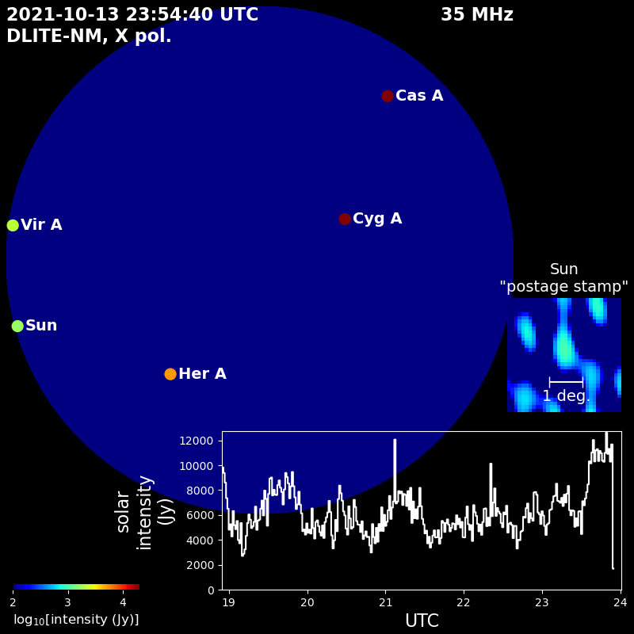

Live Data Feed from DLITE Ohio
Live data being taken at Observatory Park with DLITE Ohio. Image is refreshed every 30 seconds.
general overview of plot
Text explaining subplots, with pictures.

Student-lead Commissioning of an Ionospheric Radio Probe in the Path of the 2024 Eclipse
Some text about me in culpa qui officia deserunt mollit anim..
Joe
general overview of plot
Text explaining subplots, with pictures.